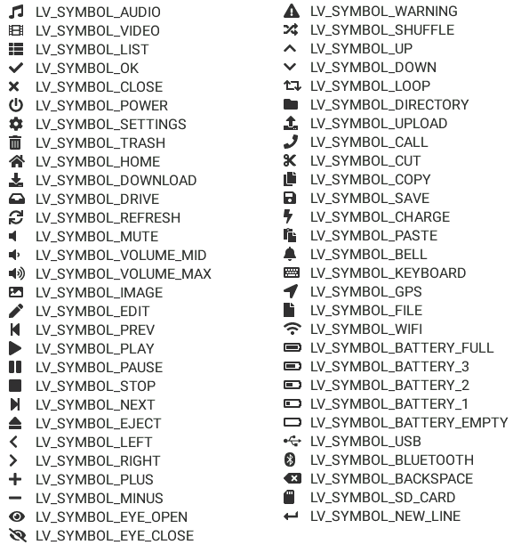

.. include:: /header.rst
:github_url: |github_link_base|/overview/font.md
Fonts
In LVGL fonts are collections of bitmaps and other information required to render images of individual letters (glyph).
A font is stored in a lv_font_t variable and can be set in a style's text_font field. For example:
lv_style_set_text_font(&my_style, &lv_font_montserrat_28); /*Set a larger font*/
Fonts have a bpp (bits per pixel) property. It shows how many bits are used to describe a pixel in a font. The value stored for a pixel determines the pixel's opacity. This way, with higher bpp, the edges of the letter can be smoother. The possible bpp values are 1, 2, 4 and 8 (higher values mean better quality).
The bpp property also affects the amount of memory needed to store a font. For example, bpp = 4 makes a font nearly four times larger compared to bpp = 1.
Unicode support
LVGL supports UTF-8 encoded Unicode characters.
Your editor needs to be configured to save your code/text as UTF-8 (usually this the default) and be sure that, LV_TXT_ENC is set to LV_TXT_ENC_UTF8 in lv_conf.h. (This is the default value)
To test it try
lv_obj_t * label1 = lv_label_create(lv_scr_act(), NULL);
lv_label_set_text(label1, LV_SYMBOL_OK);
If all works well, a ✓ character should be displayed.
Built-in fonts
There are several built-in fonts in different sizes, which can be enabled in lv_conf.h with LV_FONT_... defines.
Normal fonts
Containing all the ASCII characters, the degree symbol (U+00B0), the bullet symbol (U+2022) and the built-in symbols (see below).
LV_FONT_MONTSERRAT_1212 px fontLV_FONT_MONTSERRAT_1414 px fontLV_FONT_MONTSERRAT_1616 px fontLV_FONT_MONTSERRAT_1818 px fontLV_FONT_MONTSERRAT_2020 px fontLV_FONT_MONTSERRAT_2222 px fontLV_FONT_MONTSERRAT_2424 px fontLV_FONT_MONTSERRAT_2626 px fontLV_FONT_MONTSERRAT_2828 px fontLV_FONT_MONTSERRAT_3030 px fontLV_FONT_MONTSERRAT_3232 px fontLV_FONT_MONTSERRAT_3434 px fontLV_FONT_MONTSERRAT_3636 px fontLV_FONT_MONTSERRAT_3838 px fontLV_FONT_MONTSERRAT_4040 px fontLV_FONT_MONTSERRAT_4242 px fontLV_FONT_MONTSERRAT_4444 px fontLV_FONT_MONTSERRAT_4646 px fontLV_FONT_MONTSERRAT_4848 px font
Special fonts
LV_FONT_MONTSERRAT_12_SUBPXSame as normal 12 px font but with subpixel renderingLV_FONT_MONTSERRAT_28_COMPRESSEDSame as normal 28 px font but stored as a compressed font with 3 bppLV_FONT_DEJAVU_16_PERSIAN_HEBREW16 px font with normal range + Hebrew, Arabic, Persian letters and all their formsLV_FONT_SIMSUN_16_CJK16 px font with normal range plus 1000 of the most common CJK radicalsLV_FONT_UNSCII_88 px pixel perfect font with only ASCII charactersLV_FONT_UNSCII_1616 px pixel perfect font with only ASCII characters
The built-in fonts are global variables with names like lv_font_montserrat_16 for a 16 px height font. To use them in a style, just add a pointer to a font variable like shown above.
The built-in fonts with bpp = 4 contain the ASCII characters and use the Montserrat font.
In addition to the ASCII range, the following symbols are also added to the built-in fonts from the FontAwesome font.

The symbols can be used singly as:
lv_label_set_text(my_label, LV_SYMBOL_OK);
Or with together with strings (compile time string concatenation):
lv_label_set_text(my_label, LV_SYMBOL_OK "Apply");
Or more symbols together:
lv_label_set_text(my_label, LV_SYMBOL_OK LV_SYMBOL_WIFI LV_SYMBOL_PLAY);
Special features
Bidirectional support
Most languages use a Left-to-Right (LTR for short) writing direction, however some languages (such as Hebrew, Persian or Arabic) use Right-to-Left (RTL for short) direction.
LVGL not only supports RTL texts but supports mixed (a.k.a. bidirectional, BiDi) text rendering too. Some examples:

BiDi support is enabled by LV_USE_BIDI in lv_conf.h
All texts have a base direction (LTR or RTL) which determines some rendering rules and the default alignment of the text (Left or Right). However, in LVGL, the base direction is not only applied to labels. It's a general property which can be set for every object. If not set then it will be inherited from the parent. This means it's enough to set the base direction of a screen and every object will inherit it.
The default base direction for screens can be set by LV_BIDI_BASE_DIR_DEF in lv_conf.h and other objects inherit the base direction from their parent.
To set an object's base direction use lv_obj_set_base_dir(obj, base_dir). The possible base directions are:
LV_BIDI_DIR_LTR: Left to Right base directionLV_BIDI_DIR_RTL: Right to Left base directionLV_BIDI_DIR_AUTO: Auto detect base directionLV_BIDI_DIR_INHERIT: Inherit base direction from the parent (or a default value for non-screen objects)
This list summarizes the effect of RTL base direction on objects:
Create objects by default on the right
lv_tabview: Displays tabs from right to leftlv_checkbox: Shows the box on the rightlv_btnmatrix: Shows buttons from right to leftlv_list: Shows icons on the rightlv_dropdown: Aligns options to the rightThe texts in
lv_table,lv_btnmatrix,lv_keyboard,lv_tabview,lv_dropdown,lv_rollerare "BiDi processed" to be displayed correctly
Arabic and Persian support
There are some special rules to display Arabic and Persian characters: the form of a character depends on its position in the text. A different form of the same letter needs to be used if is isolated, at start, middle or end positions. Besides these, some conjunction rules should also be taken into account.
LVGL supports these rules if LV_USE_ARABIC_PERSIAN_CHARS is enabled.
However, there some limitations:
Only displaying text is supported (e.g. on labels), text inputs (e.g. text area) don't support this feature.
Static text (i.e. const) is not processed. E.g. texts set by
lv_label_set_text()will be "Arabic processed" butlv_lable_set_text_static()won't.Text get functions (e.g.
lv_label_get_text()) will return the processed text.
Subpixel rendering
Subpixel rendering allows for tripling the horizontal resolution by rendering anti-aliased edges on Red, Green and Blue channels instead of at pixel level granularity. This takes advantage of the position of physical color channels of each pixel, resulting in higher quality letter anti-aliasing. Learn more here.
For subpixel rendering, the fonts need to be generated with special settings:
In the online converter tick the
SubpixelboxIn the command line tool use
--lcdflag. Note that the generated font needs about three times more memory.
Subpixel rendering works only if the color channels of the pixels have a horizontal layout. That is the R, G, B channels are next each other and not above each other.
The order of color channels also needs to match with the library settings. By default, LVGL assumes RGB order, however this can be swapped by setting LV_SUBPX_BGR 1 in lv_conf.h.
Compressed fonts
The bitmaps of fonts can be compressed by
ticking the
Compressedcheck box in the online converternot passing the
--no-compressflag to the offline converter (compression is applied by default)
Compression is more effective with larger fonts and higher bpp. However, it's about 30% slower to render compressed fonts. Therefore it's recommended to compress only the largest fonts of a user interface, because
they need the most memory
they can be compressed better
and probably they are used less frequently then the medium-sized fonts, so the performance cost is smaller.
Add a new font
There are several ways to add a new font to your project:
The simplest method is to use the Online font converter. Just set the parameters, click the Convert button, copy the font to your project and use it. Be sure to carefully read the steps provided on that site or you will get an error while converting.
Use the Offline font converter. (Requires Node.js to be installed)
If you want to create something like the built-in fonts (Montserrat font and symbols) but in a different size and/or ranges, you can use the
built_in_font_gen.pyscript inlvgl/scripts/built_in_fontfolder. (This requires Python andlv_font_convto be installed)
To declare a font in a file, use LV_FONT_DECLARE(my_font_name).
To make fonts globally available (like the builtin fonts), add them to LV_FONT_CUSTOM_DECLARE in lv_conf.h.
Add new symbols
The built-in symbols are created from the FontAwesome font.
Search for a symbol on https://fontawesome.com. For example the USB symbol. Copy its Unicode ID which is
0xf287in this case.Open the Online font converter. Add FontAwesome.woff. .
Set the parameters such as Name, Size, BPP. You'll use this name to declare and use the font in your code.
Add the Unicode ID of the symbol to the range field. E.g.
0xf287for the USB symbol. More symbols can be enumerated with,.Convert the font and copy the generated source code to your project. Make sure to compile the .c file of your font.
Declare the font using
extern lv_font_t my_font_name;or simply useLV_FONT_DECLARE(my_font_name);.
Using the symbol
Convert the Unicode value to UTF8, for example on this site. For
0xf287the Hex UTF-8 bytes areEF 8A 87.Create a
definestring from the UTF8 values:#define MY_USB_SYMBOL "\xEF\x8A\x87"Create a label and set the text. Eg.
lv_label_set_text(label, MY_USB_SYMBOL)
Note - lv_label_set_text(label, MY_USB_SYMBOL) searches for this symbol in the font defined in style.text.font properties. To use the symbol you may need to change it. Eg style.text.font = my_font_name
Load a font at run-time
lv_font_load can be used to load a font from a file. The font needs to have a special binary format. (Not TTF or WOFF).
Use lv_font_conv with the --format bin option to generate an LVGL compatible font file.
Note that to load a font LVGL's filesystem needs to be enabled and a driver must be added.
Example
lv_font_t * my_font;
my_font = lv_font_load(X/path/to/my_font.bin);
/*Use the font*/
/*Free the font if not required anymore*/
lv_font_free(my_font);
Add a new font engine
LVGL's font interface is designed to be very flexible but, even so, you can add your own font engine in place of LVGL's internal one. For example, you can use FreeType to real-time render glyphs from TTF fonts or use an external flash to store the font's bitmap and read them when the library needs them.
A ready to use FreeType can be found in lv_freetype repository.
To do this, a custom lv_font_t variable needs to be created:
/*Describe the properties of a font*/
lv_font_t my_font;
my_font.get_glyph_dsc = my_get_glyph_dsc_cb; /*Set a callback to get info about gylphs*/
my_font.get_glyph_bitmap = my_get_glyph_bitmap_cb; /*Set a callback to get bitmap of a glyp*/
my_font.line_height = height; /*The real line height where any text fits*/
my_font.base_line = base_line; /*Base line measured from the top of line_height*/
my_font.dsc = something_required; /*Store any implementation specific data here*/
my_font.user_data = user_data; /*Optionally some extra user data*/
...
/* Get info about glyph of `unicode_letter` in `font` font.
* Store the result in `dsc_out`.
* The next letter (`unicode_letter_next`) might be used to calculate the width required by this glyph (kerning)
*/
bool my_get_glyph_dsc_cb(const lv_font_t * font, lv_font_glyph_dsc_t * dsc_out, uint32_t unicode_letter, uint32_t unicode_letter_next)
{
/*Your code here*/
/* Store the result.
* For example ...
*/
dsc_out->adv_w = 12; /*Horizontal space required by the glyph in [px]*/
dsc_out->box_h = 8; /*Height of the bitmap in [px]*/
dsc_out->box_w = 6; /*Width of the bitmap in [px]*/
dsc_out->ofs_x = 0; /*X offset of the bitmap in [pf]*/
dsc_out->ofs_y = 3; /*Y offset of the bitmap measured from the as line*/
dsc_out->bpp = 2; /*Bits per pixel: 1/2/4/8*/
return true; /*true: glyph found; false: glyph was not found*/
}
/* Get the bitmap of `unicode_letter` from `font`. */
const uint8_t * my_get_glyph_bitmap_cb(const lv_font_t * font, uint32_t unicode_letter)
{
/* Your code here */
/* The bitmap should be a continuous bitstream where
* each pixel is represented by `bpp` bits */
return bitmap; /*Or NULL if not found*/
}
Use font fallback
You can specify fallback in lv_font_t to provide fallback to the font. When the font
fails to find glyph to a letter, it will try to let font from fallback to handle.
fallback can be chained, so it will try to solve until there is no fallback set.
/* Roboto font doesn't have support for CJK glyphs */
lv_font_t *roboto = my_font_load_function();
/* Droid Sans Fallback has more glyphs but its typeface doesn't look good as Roboto */
lv_font_t *droid_sans_fallback = my_font_load_function();
/* So now we can display Roboto for supported characters while having wider characters set support */
roboto->fallback = droid_sans_fallback;